01
Alsácia
Estrasburgo, Colmar, os vilarejos de enxaimel e a icônica Rota dos Vinhos.
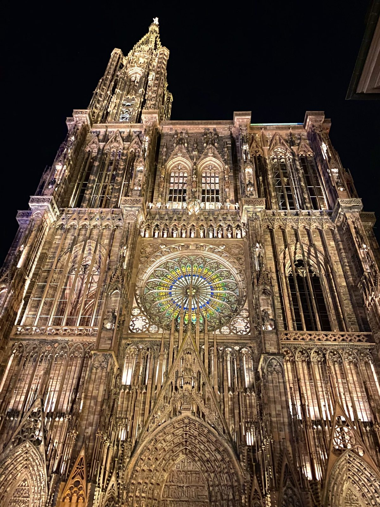
Guia credenciada, fotógrafa e motorista brasileira. Tours privados e personalizados, em português, na Alsácia e na Floresta Negra.
A beleza faz você parar. A história faz você lembrar.
Eu não entrego roteiros. Eu entrego a alma dessas regiões.
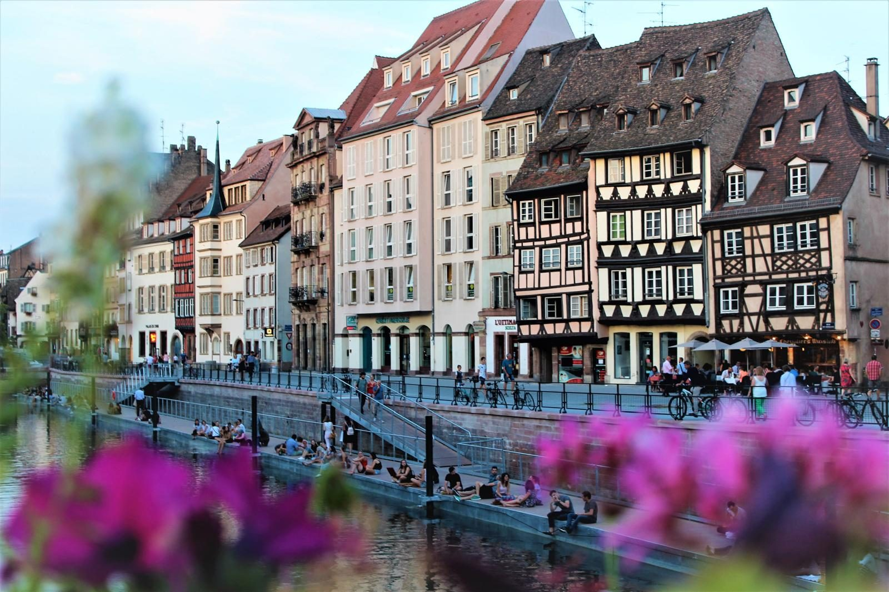
Reduzir essas regiões a um cenário de Disney é perder o essencial.
Por trás de cada vilarejo, cada castelo e cada tradição existe uma história — às vezes uma beleza, às vezes uma cicatriz. Comigo, você não só visita: você compreende. E quando compreende, a viagem ganha significado.
Roteiros culturais em Estrasburgo, Colmar, Riquewihr, Kaysersberg, Ribeauvillé e na Rota dos Vinhos da Alsácia.
Perguntar por quê, como, quem e o que existe por trás do lugar.
A beleza desperta o olhar; a história dá sentido ao que você vê.
Um destino não é um parque temático. É onde pessoas vivem — e isso se honra.
Brasileira, formada em Turismo e Hotelaria. Há 11 anos em Estrasburgo.
Vinte anos entre hotéis, escolas no Reino Unido e navios de cruzeiro pelo mundo — sempre com uma câmera na mão. Conduzo em português, inglês e francês, e cada roteiro é feito sob medida, no seu ritmo.

Passeios culturais privados, com história de verdade — fatos e lendas, muito além dos clichês.
As fotos do passeio são suas. Memórias, não só fotografias.
Carro, van ou micro-ônibus nas rotas panorâmicas, com conforto, logística e segurança.
No coração da Europa, entre a França, a Alemanha e a Suíça — cada um com a sua luz, a sua mesa e a sua história.
Estrasburgo, Colmar, os vilarejos de enxaimel e a icônica Rota dos Vinhos.

Do outro lado do Reno: lagos, bosques e estradas panorâmicas. Circuitos do Norte ao Sul.

A região do espumante mais famoso do mundo — vinhedos e caves. Circuitos do Norte ao Sul.
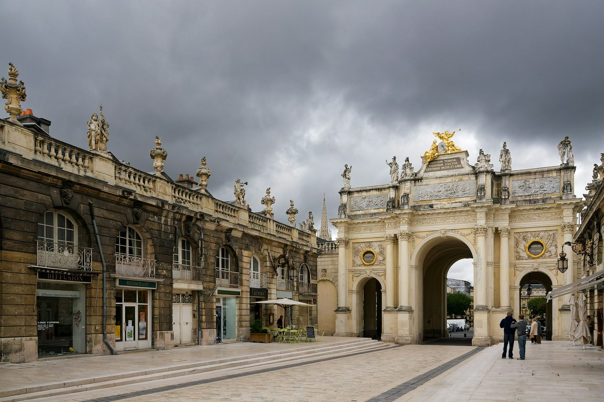
Metz, Nancy, Verdun e Domrémy-la-Pucelle — a casa natal de Joana d’Arc.
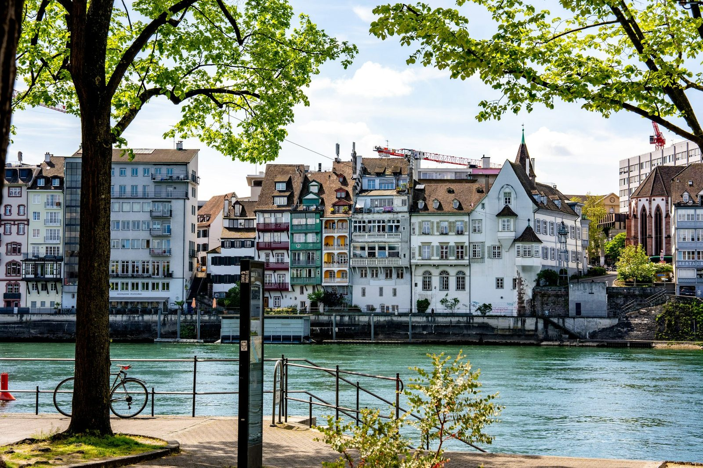
Uma experiência que atravessa a fronteira, na Suíça — o Reno e a cidade velha.
A pé, de bicicleta, de barco ou de carro; com câmera na mão ou taça na mesa.
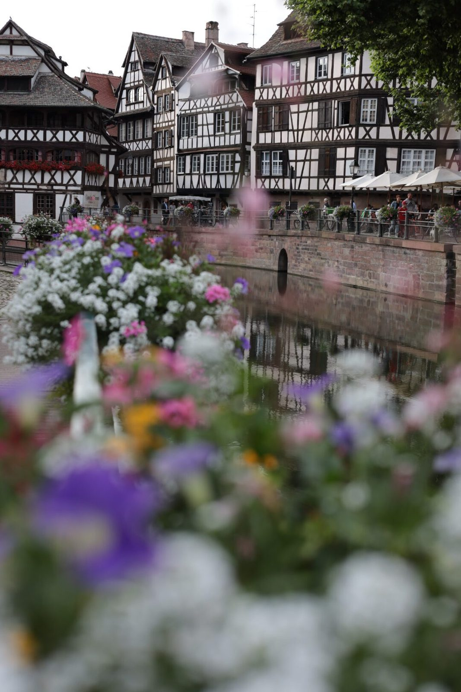
Pela Rota dos Vinhos e por Estrasburgo, com paradas que valem o pedal.
Reservar →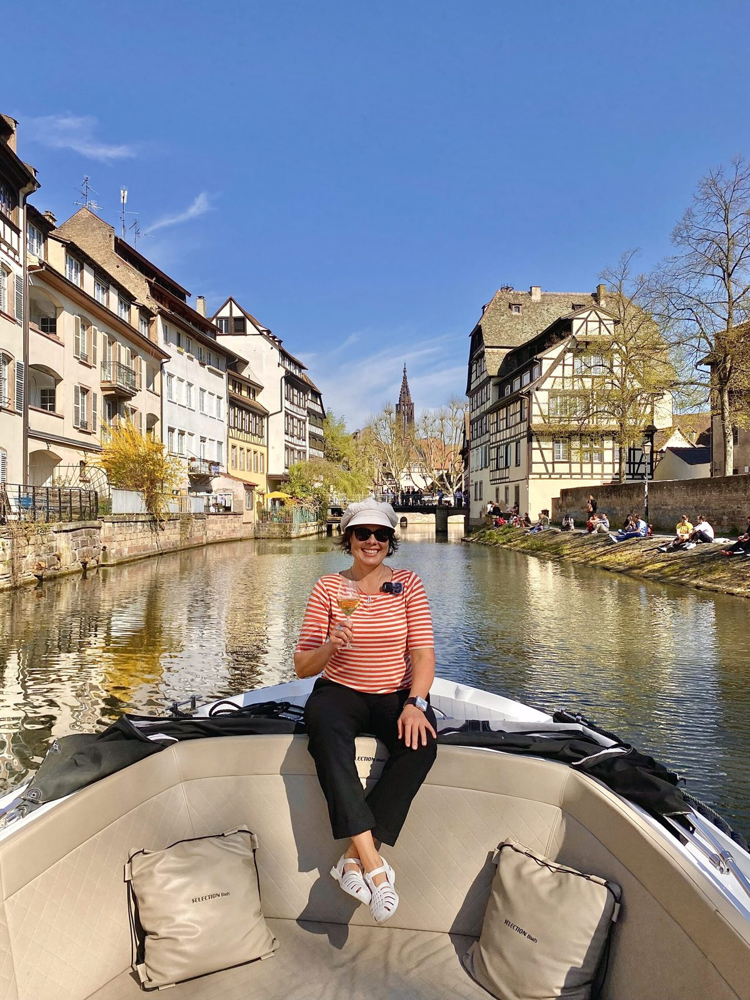
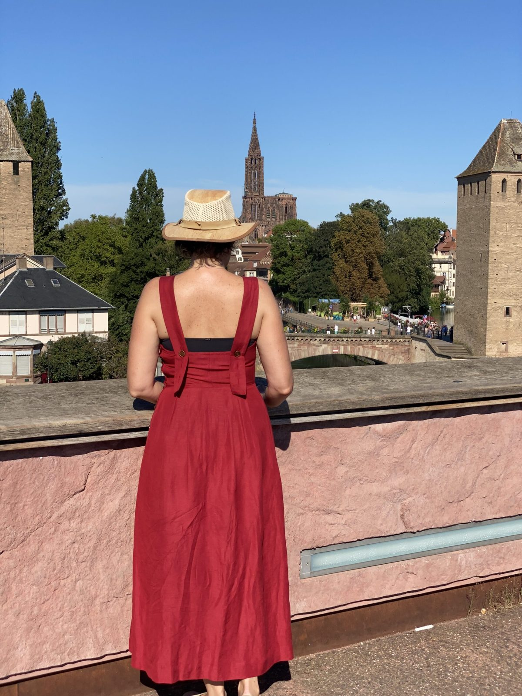
Você e a Alsácia no cenário dos seus souvenirs — vinhedos, castelos, cidade velha.
Reservar →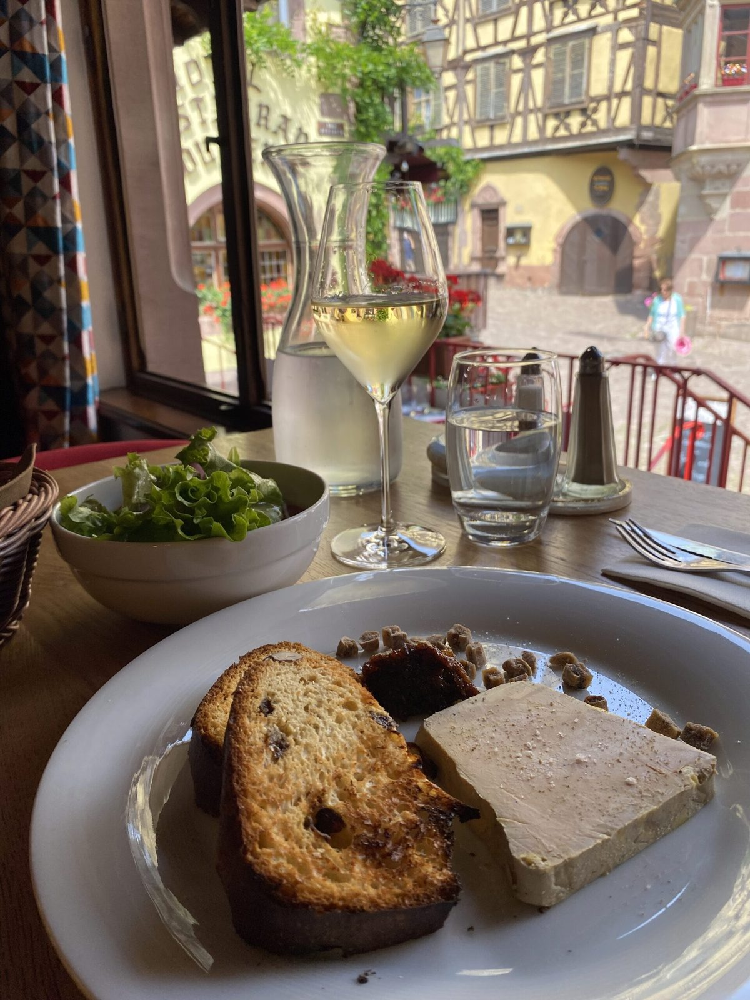
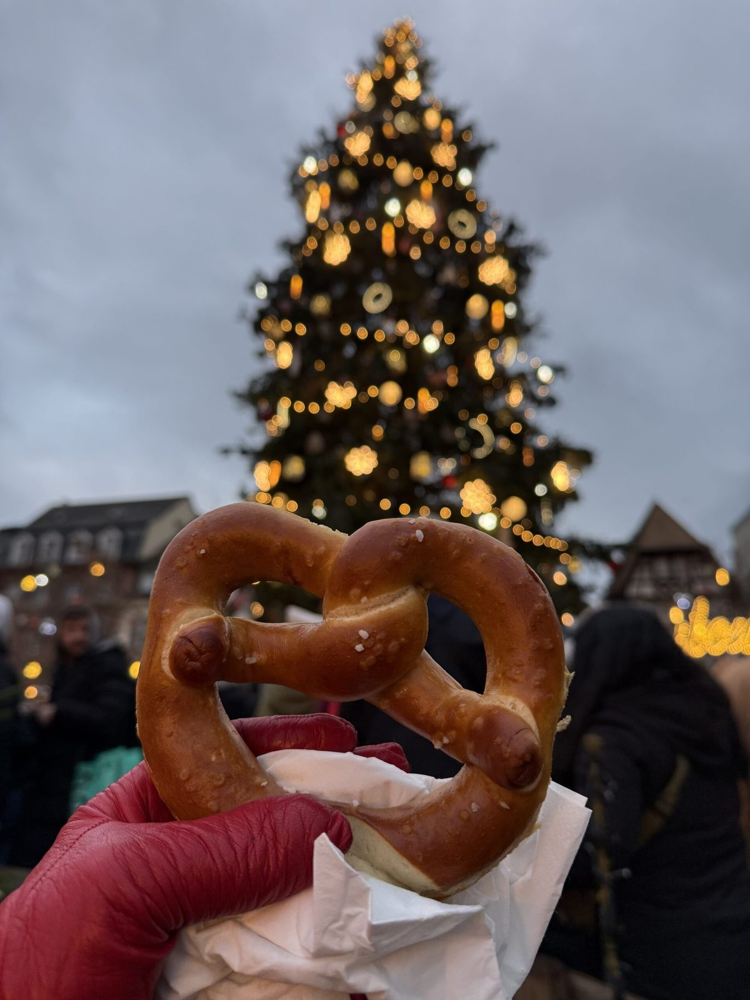
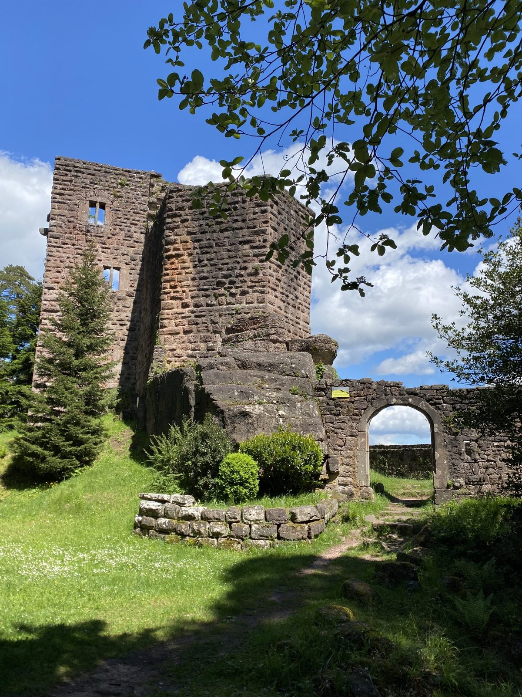
Haut-Koenigsbourg, Riquewihr e Kaysersberg, com tempo e sem pressa.
Reservar →Cada viagem é única — os roteiros são criados sob medida, no seu ritmo e interesses. Veja as opções, as datas e reserve em minutos, tudo no aplicativo.
Ver roteiros e reservarVocê não precisa chegar sabendo história — precisa chegar querendo compreender. Pode se interessar por vinho, fotografia, gastronomia, bicicleta ou patrimônio. O que nos une é a vontade de ir além da aparência.
Se você acha que viajar é muito mais do que colecionar lugares, seja muito bem-vindo.
Atendo viajantes individuais, casais, famílias, grupos de amigos e grupos organizados por agências.
[Depoimento real do Google — entra aqui]
[Depoimento real do Airbnb — entra aqui]
[Depoimento real do Google — entra aqui]
Seus depoimentos reais do Google e do Airbnb entram aqui — me diga quais usar.
Eu não entrego roteiros, eu entrego a alma dessas regiões.